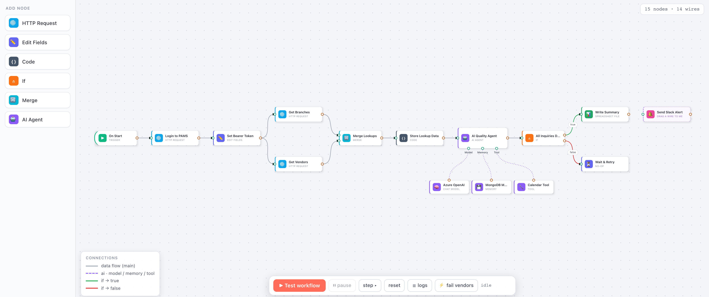

grafloria
grafloriaWire your ideas with Grafloria
The framework-agnostic diagram engine — flow charts, dashboards, UML, and real-time collaboration. Native in Angular, React and Vue. Open source, MIT, no pro tier.
npm install @grafloria/react # or renderer-angular · vue · element
See it running
The hero above is a real canvas — and so are these. Every card opens a working demo from the 100+-page gallery, each driven by real gestures in CI.

Workflow editor — typed wires, AI-agent ports, step executionEverything a diagram product needs — in the open
The features other libraries sell as “Pro” ship here as MIT: measured, gate-tested, and demonstrated in a 100-plus-page live gallery.
Custom nodes, your framework's way
Angular ng-templates, React components, Vue slots — real bindings and state inside every node, ports as model anatomy.
Declarative auto-layout
ELK, dagre, force, tree, grid, and a zero-config auto — one prop. ELK loads lazily, so you ship none of it until a layout runs.
A drag-pack dashboard kit
Declared as pure data: tabbed views, drag & resize with live re-packing, undo, and built-in KPI, line, bar, donut, funnel and table widgets.
Multiplayer in one prop
CRDT sync over any transport, live cursors, anchored comment threads with a conversation panel — serverless cross-tab or your own websocket.
Real vector export
SVG, PNG, and a self-contained PDF writer — gradients, soft masks, images and text as true vectors, pixel-verified in CI.
Mermaid-compatible text
Diagrams as text with a lossless sidecar: hand-edit the body, keep positions and styles, round-trip through the live model.
Commercial-grade edge routing, free
Most libraries let wires cut straight through nodes and call it a day — obstacle-avoiding routing is the feature the market puts price tags on. Grafloria ships it in the MIT core: orthogonal routes that never cross their own nodes, proven in CI by a 480-placement sweep, hardened by hundreds of real-gesture line-geometry checks.
The full surface
Sixteen capability areas, every one demonstrated in the live gallery — this is what "framework-agnostic diagram engine" actually means in practice.
Rendering
Framework-agnostic SVG VNode pipeline; per-entity caching; spatial-index viewport culling; 3-tier level-of-detail; rich HTML inside nodes.
Edges
Four path families, eight arrowhead types, labels, jump-overs, parallel links & self-loops, editable waypoints, reconnect, animated gradients.
Routing
Obstacle-avoiding orthogonal with a never-cross-your-own-node guarantee, escape stubs, smart connection points, port snapping.
Ports
Per-shape positioning, multi-port spreading, visibility strategies, typed ports with validation, connection limits.
Nodes & shapes
21 built-in figures plus custom silhouettes, auto-sizing, resizer chrome, node toolbars, drag handles, intersections.
Interaction
Drag, pan, zoom, marquee, snap-to-grid, helper lines, proximity connect, context menus, touch — every gesture undoable.
Grouping
Nested groups with real frames, swimlanes & pools, parent-child membership, cross-boundary edges resolved at the right ancestor.
Auto-layout
Layered (ELK), tree, force, grid, compound containers — off the main thread in a Worker, lazy-loaded so you ship none of it unused.
Data & text
Plain-JSON specs, byte-stable save / load, Mermaid-compatible text in and out with a lossless position sidecar.
Performance
Viewport culling, level-of-detail, VNode caching, worker layout — see the stress test hold up under load.
Styling & theming
Light/dark token themes with runtime switching, CSS variables, per-edge style API — up to glowing animated gradients.
Frameworks
Angular templates & signals, React hooks, Vue composables, a vanilla <grafloria-flow> element — one conformance suite across all four.
Accessibility
Keyboard-complete canvas: focus ring, arrow nudge with pixel-exact undo, connect by keyboard, live-region narration — axe-audited in CI.
Export
SVG, PNG, and a self-contained PDF writer — true vectors, rendered server-side, byte-identical every run.
Collaboration
Per-property CRDT, serverless cross-tab sync, presence cursors, anchored comment threads, conflict resolution you can watch converge.
Extensibility
Custom tools on a public seam, custom shapes, lazy-loaded plugin chrome (minimap, controls, background), and data-driven kits: ER, UML, dashboards.
One engine, three native dialects
The same headless core underneath — each wrapper speaks its framework's idiom, verified by the same conformance suite.
Angular
<grafloria-diagram-canvas
[(nodes)]="nodes" [(edges)]="edges"
[layout]="'elk'" [plugins]="true">
<ng-template grafloriaNode="job"
let-data="data">
{{ data['title'] }}
</ng-template>
</grafloria-diagram-canvas>React
<GrafloriaFlow
nodes={nodes} onNodesChange={set}
layout="elk" plugins
nodeTypes={{ job: JobCard }}
collab={{ transport, actor,
presence: true }}
/>Vue
<GrafloriaFlow
v-model:nodes="nodes"
v-model:edges="edges"
layout="elk" :plugins="true">
<template #node-job="{ data }">
{{ data.title }}
</template>
</GrafloriaFlow>